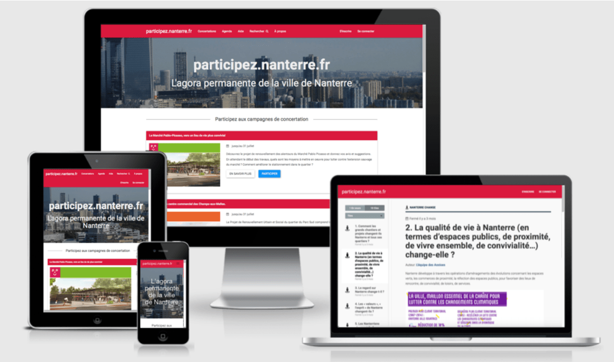

OSP CUSTOM est notre offre sur-mesure.
Pour répondre le plus précisément possible aux demandes de nos partenaires, nos équipes sont en mesure de produire une plateforme personnalisée, qui puisse intégrer plusieurs moteurs de concertation et la construction d'une communauté d'utilisateurs. Notre démarche vise à échanger le plus possible, non seulement avec l’administration partenaire, mais aussi avec les citoyens, afin de co-construire l’outil dont leur collectivité a besoin.
- 
Accompagnement et échanges avec les équipes partenaires.
Construire la plateforme numérique idéale passe par des échanges répétés et plusieurs itérations successives pour sélectionner et adapter les outils, concevoir une stratégie de concertation et la communication adéquate, accompagner leur déploiement en ligne et leur utilisation sur le terrain par le public le plus large possible. Notre expérience nous permet d'intervenir sur l'ensemble de ces enjeux pendant les mois nécessaires à la création d'un tel dispositif. Nous avons notamment réalisé une plateforme de participation citoyenne pour la mairie de Nanterre, un article retranscrivant cette aventure est disponible ici !

Offre accompagnement
Une démarche de consultation doit être suivie et animée. Cela demande du temps et certaines compétences (création de contenus, newsletters, ateliers d'intelligence collective). Trouver des ressources internes n'est pas toujours évident, c'est pourquoi nous avons créé une offre d'accompagnement adaptable sur mesure capable de s'intégrer à vos services.
A propos d'Open Source Politics
Open Source Politics est une entreprise de l'ESS qui développe des solutions de démocratie participative open source. Nous accompagnons techniquement et méthodologiquement des acteurs publics, privés et associatifs dans la mise en place de dispositif en ligne et hors-ligne de participation. Nous intervenons sur différents types de projets : consultations publiques, budgets participatifs, prises de décisions collaboratives etc.Notre action est guidée par les principes du gouvernement ouvert : transparence, participation et coopération. Nous sommes co-fondateurs de plusieurs projets Civic Tech : DemocracyOS France, Democracy Earth, les hackathons Open Democracy Now. Découvrez notre histoire.

Vous souhaitez mettre en place un dispositif de participation citoyenne. Remplissez notre questionnaire pour définir avec précision vos besoins, nous vous recontacterons dans les plus brefs délais.
Questionnaire